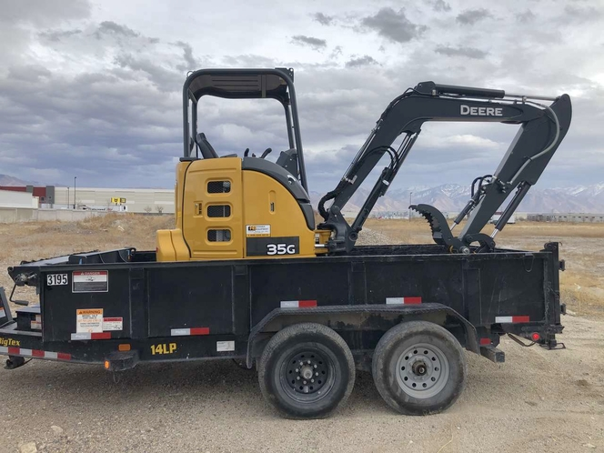

Market / customer / transport
3-4吨北美市场洞察
从销量结构、品牌产品组合、客户购买逻辑和实际运输包解释为什么3-4吨级是核心市场，以及XE35U面对的进入门槛。
证据范围PPT 48–492026为PPT预测值
Volume trend
市场规模与销量变化
柱内数字为品牌销量，柱顶为合计；虚线柱为预测。
市场判断
Competitive landscape
品牌格局与主销机型
机型热度来自PPT第48页，代表源文件中的2025快照，不自动视为当前销量。
Customer logic
客户类型与购买逻辑
PPT列示客户占比
四类合计为90%，PPT未说明其余10%的客户分类。
购买逻辑
- 机器、快换、拇指钳和常用铲斗能否在目标拖车上一起转运
- 非专业或多用户场景下是否直观、稳定、易上手
- 沟槽、回填、起吊、破碎和农业属具能否覆盖
- 驾驶空间、座椅、空调和人机交互是否适合长时间作业
Transport envelope
运输方式与法规约束

PPT观察：轻型皮卡搭配14K拖车，同时运输挖机和常用机具。
典型运输包重量
驾照和组合重量口径来自PPT历史摘要。本页面不提供法律结论，正式产品和销售使用前必须由法规/合规部门复核。